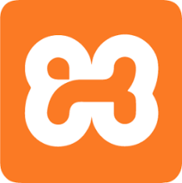

HTML
CSS
JavaScript
PHP
MySQL
Laravel
Bootstrap
React.js
 Visual Studio Code
Visual Studio Code
Xamp Control PanelGit
GitHub
I am Nguyen Tuan Kiet, a passionate backend developer specializing in PHP Laravel, with a strong desire to learn and grow. Although I’m still early in my career, I have gained over 2 years of hands-on experience working on real-world web projects using Laravel — ranging from internal management systems to small-scale e-commerce platforms.
I focus on building clean, scalable, and maintainable systems, with a solid grasp of RESTful API design, ORM (Eloquent), security practices, and optimizing MySQL database queries. Beyond technical skills, I also work on improving teamwork, problem-solving abilities, and collaboration with frontend developers to ensure the final product runs smoothly.
Currently, I’m continuing to improve myself by learning new technologies such as Docker, Git, and CI/CD, preparing myself for more professional working environments. I’m always eager to join passionate teams where I can contribute meaningfully and grow in the long term.
When I first started school, I didn’t have much knowledge about programming.
However, my curiosity and passion for technology prompted me to teach myself through books, online materials, and free courses.
I started with HTML, CSS, and gradually approached JavaScript, PHP, and MySQL.
Each line of code I wrote was a step forward, helping me gain a deeper understanding of how a real website or application works.Once I had a solid foundation, I started working on small projects like an e-commerce website, a student management site, and a personal blog. Each project taught me more about Git, teamwork, and troubleshooting.
I tried to simulate a professional work environment: dividing tasks, writing clean code, optimizing performance, and testing. Through each completed product, I not only improved my skills but also built a real portfolio for the future.
I understand that technology is always changing every day, so I will constantly try to improve my professional skills and update new trends.
In the future, I want to improve my in-depth backend programming skills, learn more about DevOps and system architecture.
At the same time, I will also practice soft skills such as teamwork, communication and time management to become a more comprehensive and professional programmer.
Visual Studio Code
Xamp Control Panel